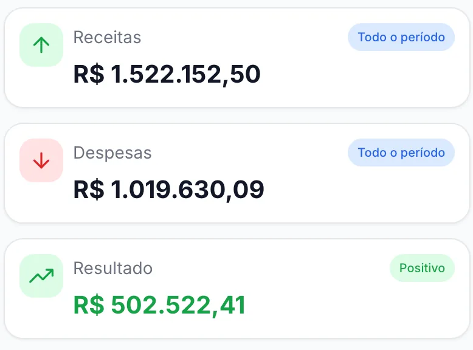

01 · O sistema
Financeiro Diário
O controle financeiro da sua empresa na nuvem, aberto no computador ou no celular. Lance o que entrou e o que saiu em quatro campos, e veja o resultado do mês se refazer na hora.
- Fluxo de caixa, gráficos e relatórios prontos para o contador ou o banco
- Plano de contas já estruturado, editável quando a operação pedir
- Importa a planilha da LTQ e traz todo o histórico de uma vez
